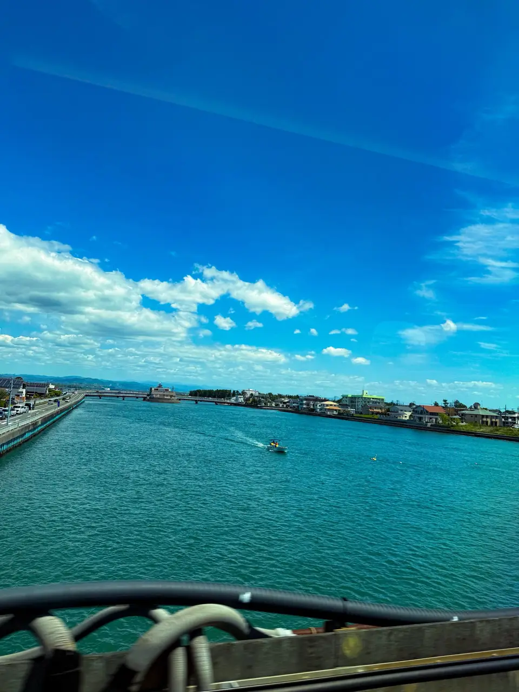
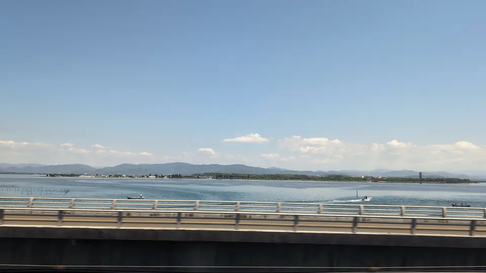
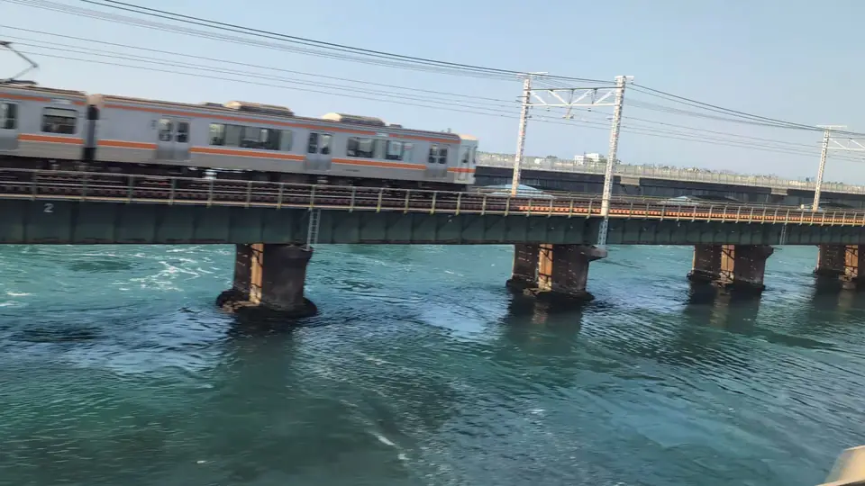
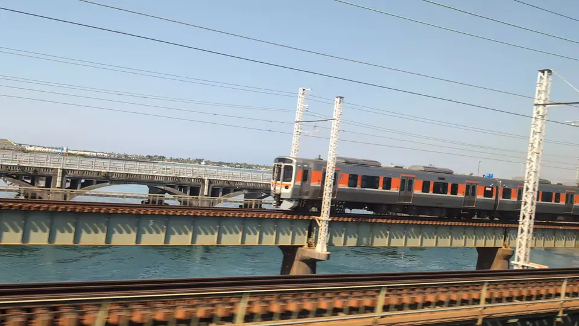
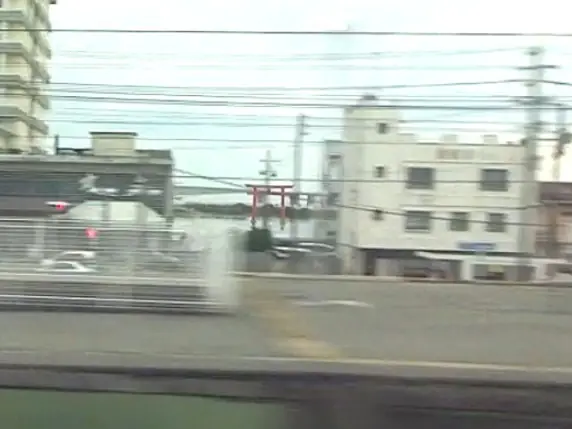
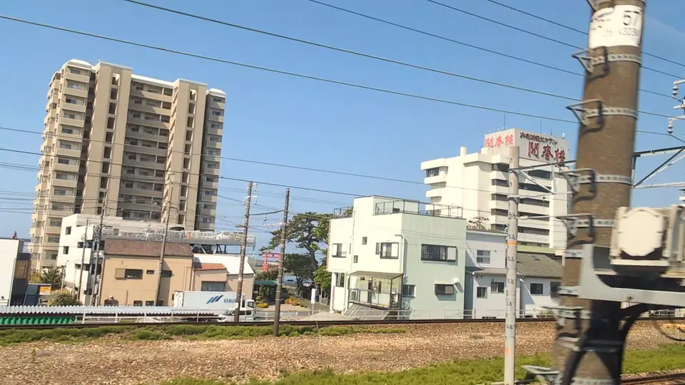

TOKAIDO SHINKANSEN WINDOW VIEW
When can you see Lake Hamana from the Shinkansen?
The train runs over the water.

- Section
- Hamamatsu → Toyohashi
- Seat side
- Seat A · sea side / Seat E · mountain side
- Timing
- About 73 minutes after leaving Tokyo on a Nozomi train
- Photos
- 7 photos
How to find Lake Hamana
After Hamamatsu, Lake Hamana spreads out on both sides of the train. It is not only a Seat E view; Seat A also gets water, bridges, and open sky. On clear days with crisp air, Mt. Fuji can sometimes appear beyond the lake. Enjoy the bright water and eel-farming rafts, and keep a small lookout for distant Fuji too.
More: Lake Hamana tourism@letus10: Lake Hamana and Bentenjima torii article (Japanese only)
If you are traveling from Tokyo toward Shin-Osaka, start watching the Seat A · sea side / Seat E · mountain side window as you approach Hamamatsu → Toyohashi. If you are traveling toward Tokyo, the order is reversed.
Location at a glance
Open mapSwitch between the spot and the Shinkansen viewpoint.
How to catch Lake Hamana
1. Choose the window first
As you approach Hamamatsu → Toyohashi, start watching from Seat A · sea side / Seat E · mountain side. Use Live Guide while riding, or the map on this page before you board.
This wider view appears intermittently through the section. Buildings and terrain may block it, so the timing is a guide for when to start looking, not a continuous visibility claim.
2. Highlights
Water views are satisfying because the scenery suddenly opens up after dense urban sections. The surface can make the change noticeable even on cloudy days.
Lake Hamana in photos






 Related
Mt. Fuji beyond Lake Hamana
Related
Mt. Fuji beyond Lake Hamana
 Related
Mt. Fuji
Related
Mt. Fuji
 Related
Mt. Ibuki
Related
Mt. Ibuki